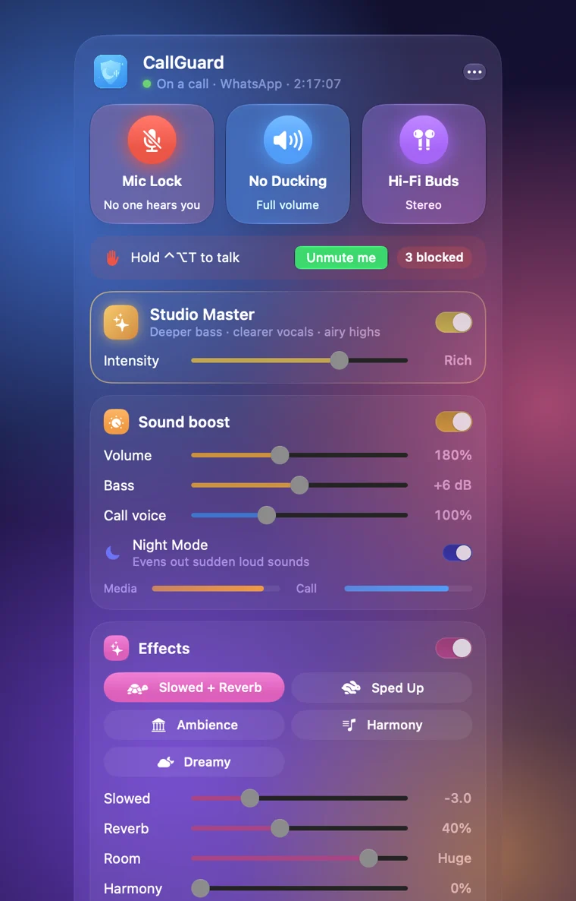

Fall asleep on the call. Your mic stays locked.
CallGuard is the all-night call companion for Mac. It locks your mic so an earbud tap can't unmute you, keeps YouTube and Spotify at full volume during calls, keeps your earbuds in hi-fi, and makes everything sound richer. Free and open source.
Version 3.3 · macOS 14.4 or later · Apple silicon and Intel · MIT license · no drivers

Your music stays loud on calls.
The second a call starts, macOS drops YouTube and Spotify to a whisper. It's called ducking, and only the call app can change it. There is no switch for you.
CallGuard moves the call onto the Mac's speakers, muted in hardware, so the ducking lands where nobody is listening. Everything you hear is then played to your earbuds from a copy taken before the drop.
- Volume keys keep working, and everything switches back when the call ends.
- Verified with WhatsApp. Needs earbuds or headphones.
An earbud tap can't unmute you.
Roll over in your sleep, an earbud registers a tap, and suddenly you're unmuted. Mic Lock mutes the microphone at the hardware level, so every app gets digital silence whatever its own mute button says. If anything un-mutes it, CallGuard puts it back within milliseconds and counts it.
- One click on the red LOCKED menu bar icon unmutes you.
- Hold ⌃⌥T to talk while locked. ⌃⌥M locks from anywhere.
- Locks itself when you go quiet on a call, and unlocks when the call ends.
No more phone-line sound.
When a call uses your earbuds' mic, Bluetooth drops them into headset mode: 16 kHz, mono, like an old phone line. Hi-Fi Buds makes calls use the Mac's built-in mic instead, so your earbuds stay in stereo hi-fi.
Premium sound from any earbuds.
One switch. Harmonic bass adds the overtones of every bass note, so small earbuds and laptop speakers let you hear deep bass. The low end is tightened and centred, boxiness is dipped, vocals get presence and the highs get air.
- One Intensity control: Subtle, Rich or Max.
- Volume to 300% and bass to +12 dB, with a limiter that never clips.
Slowed + reverb, live, on anything.
One-tap presets for every app: Slowed + Reverb, Sped Up, Ambience, Harmony and Dreamy, with fine controls for pitch, reverb, room size, harmony and stereo width. Live audio can't play slower without falling behind, so Slowed lowers the pitch and keeps the timing in sync with the video.
The music circles your head.
Front, right, behind you, left. CallGuard uses the cues your brain uses to place a sound. It's louder in the near ear, arrives a fraction of a millisecond later in the far ear, and sounds duller behind your head. It has its own on/off switch and a speed control.
- Wear earphones. The call voice always stays in the middle.
Made for falling asleep.
A sleep timer fades the music while the call voice stays. Night Mode evens out sudden loud bits, so an ad or an explosion doesn't wake you. And if you go quiet, the mic locks itself.
- 10:40 pmCall startsDucking dodged. Music at full volume.
- 12:15 amYou drift off20 quiet minutes, so the mic locks itself.
- 12:45 amSleep timerThe music fades. Their voice stays.
- 3:12 amEarbud tapUnmute blocked. You stay muted.
- 7:30 amCall endsMic unlocks. Sound back to normal.
An example night, not a log.
Measured, not promised.
No drivers, no analytics, nothing recorded. Built on Apple's public Core Audio process taps. Full write-up: how CallGuard works.
Guides
- How to stop your Mac lowering music during callsWhy audio ducking happens and how to keep media at full volume.
- Why Bluetooth earbuds sound muffled on Mac callsHeadset mode explained, and how to keep stereo hi-fi.
- How to stop AirPods or earbuds unmuting you on a callChange the tap action and lock the mic at the hardware level.
- 8D audio and slowed + reverb for any app on MacSpotify, YouTube and Apple Music, live.
Questions people ask
How do I stop my Mac lowering the volume of music and videos during calls?
macOS turns other audio down ("ducks" it) whenever a call app runs its voice processing, and there is no setting to switch it off. CallGuard's No Ducking fixes it: during a call it points the call app at the Mac's speakers, muted in hardware, and plays everything to your earbuds from a copy taken before the volume drop.
Why does my music sound muffled on calls with Bluetooth earbuds or AirPods on a Mac?
When a call app uses the earbuds' microphone, Bluetooth switches them into headset mode, which is 16 kHz mono and sounds like an old phone line. CallGuard's Hi-Fi Buds makes calls use the Mac's built-in mic instead, so the earbuds stay in stereo (44.1–48 kHz) high quality.
How do I stop my earbuds or AirPods unmuting me on a WhatsApp call?
Tapping an earbud can toggle the call app's mute button, for example while you sleep. CallGuard's Mic Lock mutes every microphone at the hardware level, so apps receive digital silence whatever their own button says. It re-mutes within milliseconds if anything unmutes it. Click the red LOCKED icon to talk again.
Can a Mac app block the microphone for just one app?
No. macOS doesn't let one app block another app's microphone without resetting privacy permissions. Mic Lock mutes the microphones themselves, so while it's on no app can hear you. Push-to-talk (hold ⌃⌥T) and the one-click unmute let you speak when you need to.
How do I get 8D audio on a Mac for any song?
Turn on CallGuard's 8D Audio and wear earphones. It makes any app's sound, such as Spotify, YouTube or Apple Music, circle your head, using equal-power panning, a small delay between the ears and head-shadow filtering. A Speed slider sets one turn every 5–18 seconds.
How do I play Spotify or YouTube slowed + reverb on a Mac?
Choose the Slowed + Reverb preset in CallGuard's Effects. It lowers the pitch by 3 semitones and adds a large reverb to all system audio live. Live audio can't play slower without falling behind, so the timing stays in sync with the video while it sounds slowed.
Is there a free bass booster and volume booster for Mac?
Yes. CallGuard boosts all Mac audio up to 300% and bass up to +12 dB, with a limiter that holds peaks at −1 dBFS so it never clips. Studio Master adds harmonic bass, so small earbuds and laptop speakers can sound deep, plus clearer vocals and airy highs. It's free under the MIT license.
Which call apps work with No Ducking?
Verified with WhatsApp for Mac. It should work with any app that follows the system output device (FaceTime, Zoom, Teams, Google Meet in a browser, Discord, Telegram…), but these haven't been tested yet. If an app doesn't move, CallGuard falls back to extra gain automatically. Please report what you find.
Why does my Sound menu say "MacBook Speakers" during a call?
That's the decoy. The speakers are hardware-muted and your audio is on your earbuds. Volume keys still control the earbuds, and the output switches back on its own when the call ends.
Does No Ducking work on the Mac's own speakers?
No, because the speakers are the decoy. Use earbuds, headphones or another output. On the speakers, CallGuard uses the extra-gain fallback instead.
What happens if CallGuard crashes during a call?
The decoy speakers stay muted, so you get silence rather than a loud laptop in the night. Reopen CallGuard and it restores everything. Since 3.1 it also only uses the decoy after it has heard real audio, and a silence guard hands the call back to your earbuds if capture ever stops.
Does CallGuard record my audio or send data anywhere?
No. CallGuard has no network code and no analytics. Audio stays in memory for a few milliseconds while it is processed, then goes straight to your output. Nothing is recorded or saved.
Is there an iPhone or Windows version?
No iPhone version: iOS doesn't let apps mute other apps' mics or process other apps' sound. On Windows, most of this is built in. See WINDOWS.md, which includes one-click registry files to turn call ducking off.
Stay on the call. Sleep easy.
Free and open source, made for good will. macOS 14.4 or later.
First launch: System Settings → Privacy & Security → Open Anyway (the app isn't notarized yet).